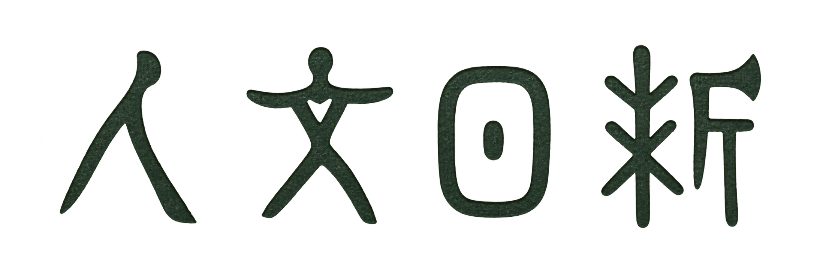

观文察理 · 温故知新

以语言文学涵养人文，在研习与反思中不断自新。题字取意甲骨，存古朴之趣。
“人文”取义于《周易·贲》“观乎人文，以化成天下”；“日新”取义于《礼记·大学》“苟日新，日日新，又日新”。“人文日新”合取二义。
语言基础、分析理论、阅读批评与写作研究。
阅读文本、题目与解析。
导读、原文、研究与研习。
概念与文本
意象组合考察可感对象在位置、动作、感官及情绪上的联系。
衔接是指代、省略、连接、词汇复现等可辨识的语言联系，连贯是话语在语境中形成的意义关联。
以湘江秋景展开对时代盛衰的追问，再以同学少年的精神与行动回应；上下阕在问答呼应中联结自然生机与主体担当。
专题阅读
围绕具体问题组织概念、论证与文本。
文本与题组
输入关键词，查找知识点、题组与课文。
按 Esc 关闭 · 支持标题与全文检索